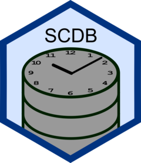

Batch migration and incremental backups
Source:vignettes/delta-loading.Rmd
delta-loading.Rmd
library(SCDB)
#>
#> Attaching package: 'SCDB'
#> The following object is masked from 'package:base':
#>
#> nrow#> duckdb keeps downloaded extensions and secrets in a temporary directory:
#> ℹ /tmp/Rtmpl7m2Z1/duckdb
#> This is removed when the R session ends.
#> • Extensions are re-downloaded each session.
#> • Secrets are lost.
#> ℹ Run duckdb(shared_home = TRUE) (or create ~/.duckdb) to keep them (suitable for most users).
#> ℹ Run duckdb(shared_home = FALSE) to accept the temporary directory (and silence this message).
#> ℹ See ?duckdb_storage for details and alternatives.SCDB provides a simple implementation of the concept known as
“delta-loading” or “incremental-loading” in the form of the pair of
functions delta_export() and delta_load().
As the names suggest, these functions are used in tandem to export a delta from a table and to load this delta onto (another) table.
A “delta” is a table containing the changes in a given time period which can be used for use-cases such as migration of data and incremental backups.
Intermittent data migration
Consider the following use case: You have a database running which
daily collects and stores snapshots of a data source using
update_snapshot() and you want to mirror this
time-versioned data in another database which cannot easily be updated
(e.g. is behind a firewall).
When you need to use this second database you want to bring it to the same state as your primary database.
At this stage, your options are to either naively pull all snapshots
from the primary database and store them in the secondary database using
update_snapshot(), or alternatively, you can pull all
changes since your last update in the form of a “delta” and load all
changes onto the secondary database in a single operation.
To see such a delta load in action, lets mimic this exact scenario:
Our example data is datasets::mtcars reduced to only two
columns: row names converted to a column car, and
hp
conn_primary <- get_connection(...)
conn_secondary <- get_connection(...)
example_data <- dplyr::tbl(conn_primary, DBI::Id(table = "example_data"))
#> Note: method with signature 'DBIConnection#Id' chosen for function 'dbExistsTable',
#> target signature 'duckdb_connection#Id'.
#> "duckdb_connection#ANY" would also be valid
example_data
#> # A query: ?? x 2
#> # Database: DuckDB 1.5.5 [unknown@Linux 7.2.11-ogc4.1.fc44.x86_64:R 4.6.1/:memory:]
#> car hp
#> <chr> <dbl>
#> 1 Mazda RX4 110
#> 2 Mazda RX4 Wag 110
#> 3 Datsun 710 93
#> 4 Hornet 4 Drive 110
#> 5 Hornet Sportabout 175
#> 6 Valiant 105
#> 7 Duster 360 245
#> 8 Merc 240D 62
#> 9 Merc 230 95
#> 10 Merc 280 123
#> # ℹ more rowsImagine on Day 1, in this case January 1st, 2020, our currently
available data is the first three records of the
example_data. We then store this data in a table
mtcars in our primary database.
data <- head(example_data, 3)
update_snapshot(
.data = data,
conn = conn_primary,
db_table = "mtcars", # the name of the DB table to store the data in
timestamp = "2020-01-01 11:00:00"
)
#> NULLThe following day, the current data is now the first five rows of our
example data. We then store this data in the database using
update_snapshot():
# Let's say that the next day, our data set is now the first 5 of our example data
data <- head(example_data, 5)
update_snapshot(
.data = data,
conn = conn_primary,
db_table = "mtcars", # the name of the DB table to store the data in
timestamp = "2020-01-02 12:00:00"
)
#> NULLThe current state of the data is then as follows (see
vignette("SCDB") for details on
get_table()):
get_table(conn_primary, "mtcars", slice_ts = NULL)
#> # A query: ?? x 5
#> # Database: DuckDB 1.5.5 [unknown@Linux 7.2.11-ogc4.1.fc44.x86_64:R 4.6.1/:memory:]
#> car hp checksum from_ts until_ts
#> <chr> <dbl> <chr> <dttm> <dttm>
#> 1 Mazda RX4 110 7cbe488757cc8… 2020-01-01 11:00:00 NA
#> 2 Mazda RX4 Wag 110 b82618e7f5dd3… 2020-01-01 11:00:00 NA
#> 3 Datsun 710 93 08c864e3854eb… 2020-01-01 11:00:00 NA
#> 4 Hornet 4 Drive 110 3c1b6c43b206d… 2020-01-02 12:00:00 NA
#> 5 Hornet Sportabout 175 9355ed7a70e3f… 2020-01-02 12:00:00 NAWe now want to recreate this state is our secondary database and we export the changes in the form of a single “delta”.
delta_1 <- delta_export(
conn = conn_primary,
db_table = "mtcars",
timestamp_from = "2020-01-01 11:00:00"
)
delta_1
#> # A query: ?? x 5
#> # Database: DuckDB 1.5.5 [unknown@Linux 7.2.11-ogc4.1.fc44.x86_64:R 4.6.1/:memory:]
#> car hp checksum from_ts until_ts
#> <chr> <dbl> <chr> <dttm> <dttm>
#> 1 Mazda RX4 110 7cbe488757cc8… 2020-01-01 11:00:00 NA
#> 2 Mazda RX4 Wag 110 b82618e7f5dd3… 2020-01-01 11:00:00 NA
#> 3 Datsun 710 93 08c864e3854eb… 2020-01-01 11:00:00 NA
#> 4 Hornet 4 Drive 110 3c1b6c43b206d… 2020-01-02 12:00:00 NA
#> 5 Hornet Sportabout 175 9355ed7a70e3f… 2020-01-02 12:00:00 NAWe then use delta_load() to apply these changes in the
secondary database. Notice that we do not need to create the table as
delta_load() will create the table as needed.
delta_load(
conn = conn_secondary,
db_table = "mtcars_firewalled",
delta = delta_1
)
#> NULL
get_table(conn_secondary, "mtcars_firewalled", slice_ts = NULL)
#> # A query: ?? x 5
#> # Database: DuckDB 1.5.5 [unknown@Linux 7.2.11-ogc4.1.fc44.x86_64:R 4.6.1/:memory:]
#> car hp checksum from_ts until_ts
#> <chr> <dbl> <chr> <dttm> <dttm>
#> 1 Mazda RX4 110 7cbe488757cc8… 2020-01-01 11:00:00 NA
#> 2 Mazda RX4 Wag 110 b82618e7f5dd3… 2020-01-01 11:00:00 NA
#> 3 Datsun 710 93 08c864e3854eb… 2020-01-01 11:00:00 NA
#> 4 Hornet 4 Drive 110 3c1b6c43b206d… 2020-01-02 12:00:00 NA
#> 5 Hornet Sportabout 175 9355ed7a70e3f… 2020-01-02 12:00:00 NAOn day 3, we imagine that we have the same 5 records, but one of them is altered
data <- head(example_data, 5) |>
dplyr::mutate(hp = ifelse(car == "Mazda RX4", hp / 2, hp))
update_snapshot(
.data = data,
conn = conn_primary,
db_table = "mtcars", # the name of the DB table to store the data in
timestamp = "2020-01-03 13:00:00"
)
#> NULLOn day 4, we imagine that we have the first 7 records along with the above alterations.
data <- head(example_data, 7) |>
dplyr::mutate(hp = ifelse(car == "Mazda RX4", hp / 2, hp))
update_snapshot(
.data = data,
conn = conn_primary,
db_table = "mtcars", # the name of the DB table to store the data in
timestamp = "2020-01-04 14:00:00"
)
#> NULLWhich brings us to the following state:
get_table(conn_primary, "mtcars", slice_ts = NULL)
#> # A query: ?? x 5
#> # Database: DuckDB 1.5.5 [unknown@Linux 7.2.11-ogc4.1.fc44.x86_64:R 4.6.1/:memory:]
#> car hp checksum from_ts until_ts
#> <chr> <dbl> <chr> <dttm> <dttm>
#> 1 Mazda RX4 110 7cbe488757cc8… 2020-01-01 11:00:00 2020-01-03 13:00:00
#> 2 Mazda RX4 Wag 110 b82618e7f5dd3… 2020-01-01 11:00:00 NA
#> 3 Datsun 710 93 08c864e3854eb… 2020-01-01 11:00:00 NA
#> 4 Hornet 4 Drive 110 3c1b6c43b206d… 2020-01-02 12:00:00 NA
#> 5 Hornet Sportabout 175 9355ed7a70e3f… 2020-01-02 12:00:00 NA
#> 6 Mazda RX4 55 1232f78f7befb… 2020-01-03 13:00:00 NA
#> 7 Valiant 105 7e6e1ccd9956c… 2020-01-04 14:00:00 NA
#> 8 Duster 360 245 573bdeb9964bf… 2020-01-04 14:00:00 NAAnd again, we want to replay both of these changes in the secondary database.
delta_2 <- delta_export(
conn = conn_primary,
db_table = "mtcars",
timestamp_from = "2020-01-03 13:00:00"
)
delta_2
#> # A query: ?? x 5
#> # Database: DuckDB 1.5.5 [unknown@Linux 7.2.11-ogc4.1.fc44.x86_64:R 4.6.1/:memory:]
#> car hp checksum from_ts until_ts
#> <chr> <dbl> <chr> <dttm> <dttm>
#> 1 Mazda RX4 110 7cbe488757cc85aab658… 2020-01-01 11:00:00 2020-01-03 13:00:00
#> 2 Mazda RX4 55 1232f78f7befb3a765b9… 2020-01-03 13:00:00 NA
#> 3 Valiant 105 7e6e1ccd9956c9592b02… 2020-01-04 14:00:00 NA
#> 4 Duster 360 245 573bdeb9964bfeab1aba… 2020-01-04 14:00:00 NAWe then use delta_load() to apply these changes in the
secondary database.
delta_load(
conn = conn_secondary,
db_table = "mtcars_firewalled",
delta = delta_2
)
#> NULL
get_table(conn_secondary, "mtcars_firewalled", slice_ts = NULL)
#> # A query: ?? x 5
#> # Database: DuckDB 1.5.5 [unknown@Linux 7.2.11-ogc4.1.fc44.x86_64:R 4.6.1/:memory:]
#> car hp checksum from_ts until_ts
#> <chr> <dbl> <chr> <dttm> <dttm>
#> 1 Mazda RX4 110 7cbe488757cc8… 2020-01-01 11:00:00 2020-01-03 13:00:00
#> 2 Mazda RX4 Wag 110 b82618e7f5dd3… 2020-01-01 11:00:00 NA
#> 3 Datsun 710 93 08c864e3854eb… 2020-01-01 11:00:00 NA
#> 4 Hornet 4 Drive 110 3c1b6c43b206d… 2020-01-02 12:00:00 NA
#> 5 Hornet Sportabout 175 9355ed7a70e3f… 2020-01-02 12:00:00 NA
#> 6 Mazda RX4 55 1232f78f7befb… 2020-01-03 13:00:00 NA
#> 7 Valiant 105 7e6e1ccd9956c… 2020-01-04 14:00:00 NA
#> 8 Duster 360 245 573bdeb9964bf… 2020-01-04 14:00:00 NABatch data migration
Consider the following use case: You have a database running which
daily collects and stores snapshots of a data source using
update_snapshot() and you want to mirror this
time-versioned data in another database but a single transfer is too
large to transfer.
In this case, we can export a number of smaller delta “batches” by
utilising the timestamp_until argument.
Starting from the state above on the “primary” database, we split the transfer in two batches.
delta_batch_1 <- delta_export(
conn = conn_primary,
db_table = "mtcars",
timestamp_from = "2020-01-01 11:00:00",
timestamp_until = "2020-01-03 13:00:00"
)
delta_batch_2 <- delta_export(
conn = conn_primary,
db_table = "mtcars",
timestamp_from = "2020-01-03 13:00:00"
)We then use delta_load() to apply these changes in the
secondary database.
delta_load(
conn = conn_secondary,
db_table = "mtcars_batch",
delta = list(delta_batch_1, delta_batch_2)
)
#> NULL
get_table(conn_secondary, "mtcars_batch", slice_ts = NULL)
#> # A query: ?? x 5
#> # Database: DuckDB 1.5.5 [unknown@Linux 7.2.11-ogc4.1.fc44.x86_64:R 4.6.1/:memory:]
#> car hp checksum from_ts until_ts
#> <chr> <dbl> <chr> <dttm> <dttm>
#> 1 Mazda RX4 110 7cbe488757cc8… 2020-01-01 11:00:00 2020-01-03 13:00:00
#> 2 Mazda RX4 Wag 110 b82618e7f5dd3… 2020-01-01 11:00:00 NA
#> 3 Datsun 710 93 08c864e3854eb… 2020-01-01 11:00:00 NA
#> 4 Hornet 4 Drive 110 3c1b6c43b206d… 2020-01-02 12:00:00 NA
#> 5 Hornet Sportabout 175 9355ed7a70e3f… 2020-01-02 12:00:00 NA
#> 6 Mazda RX4 55 1232f78f7befb… 2020-01-03 13:00:00 NA
#> 7 Valiant 105 7e6e1ccd9956c… 2020-01-04 14:00:00 NA
#> 8 Duster 360 245 573bdeb9964bf… 2020-01-04 14:00:00 NA